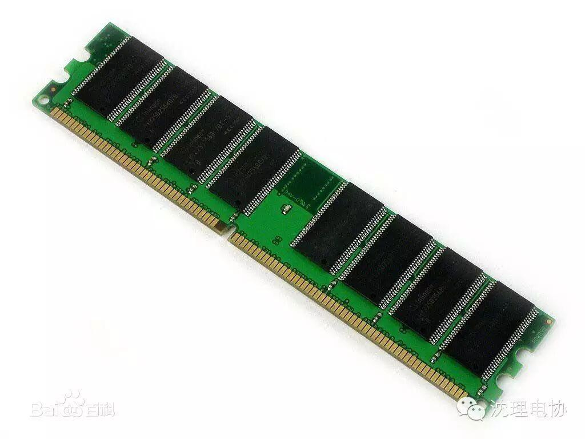

使用小程序
闪存（ROM)
闪存（Flash Memory）是一种长寿命的非易失性（在断电情况下仍能保持所存储的数据信息）的存储器，数据删除不是以单个的字节为单位而是以固定的区块为单位（注意：NOR Flash 为字节存储。），区块大小一般为256KB到20MB。闪存是电子可擦除只读存储器（EEPROM）的变种，闪存与EEPROM不同的是，EEPROM能在字节水平上进行删除和重写而不是整个芯片擦写，而闪存的大部分芯片需要块擦除。由于其断电时仍能保存数据，闪存通常被用来保存设置信息，如在电脑的BIOS（基本程序）、PDA（个人数字助理）、数码相机中保存资料等。
按种类分
U盘、CF卡、SM卡、SD/MMC卡、记忆棒、XD卡、MS卡、TF卡、PCIe闪存卡
按品牌分
矽统（SIS）、金士顿、索尼、LSI、闪迪、Kingmax、鹰泰、创见、爱国者、纽曼、威刚、联想、台电、微星、SSK、三星、海力士
内存（RAM）
内存是计算机（手机）中重要的部件之一，它是与CPU进行沟通的桥梁。计算机中所有程序的运行都是在内存中进行的，因此内存的性能对计算机的影响非常大。内存(Memory)也被称为内存储器，其作用是用于暂时存放CPU中的运算数据，以及与硬盘等外部存储器交换的数据。只要计算机在运行中，CPU就会把需要运算的数据调到内存中进行运算，当运算完成后CPU再将结果传送出来，内存的运行也决定了计算机的稳定运行。 内存是由内存芯片、电路板、金手指等部分组成的。
内存的种类和运行频率会对性能有一定影响，不过相比之下，容量的影响更加大。在其他配置相同的条件下内存越大机器性能也就越高。内存的价格小幅走低，2014年前后，电脑内存的配置越来越大，一般都在2G以上，更有4G、6G、8G内存的电脑。

特别我们要提到手机内存。手机内存并非存储数据的部件，而是手机运行程序时使用的内存（即运行内存），只能临时存储数据，用于与CPU交换高速缓存数据，但是随机存储器（RAM）本身不能用于长期存储数据。如今3GB内存的内存已作为旗舰手机的标配。小米，vivo等手机品牌已有4GB,6GB的手机销售。